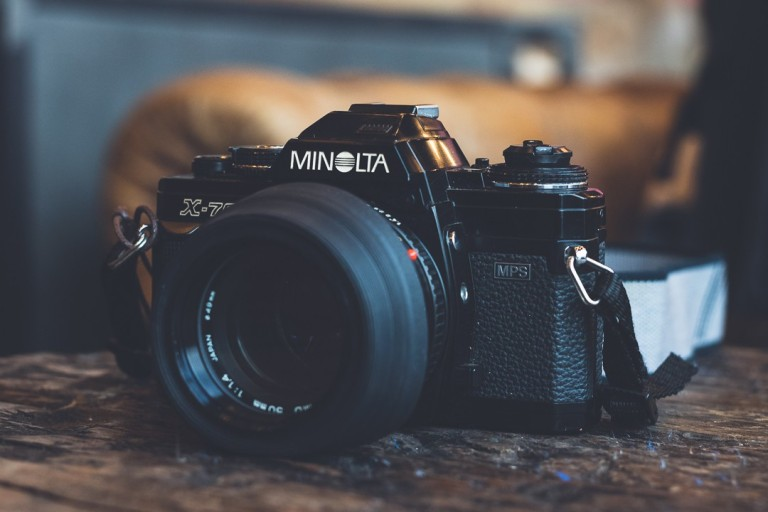
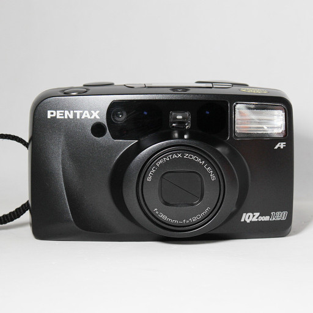
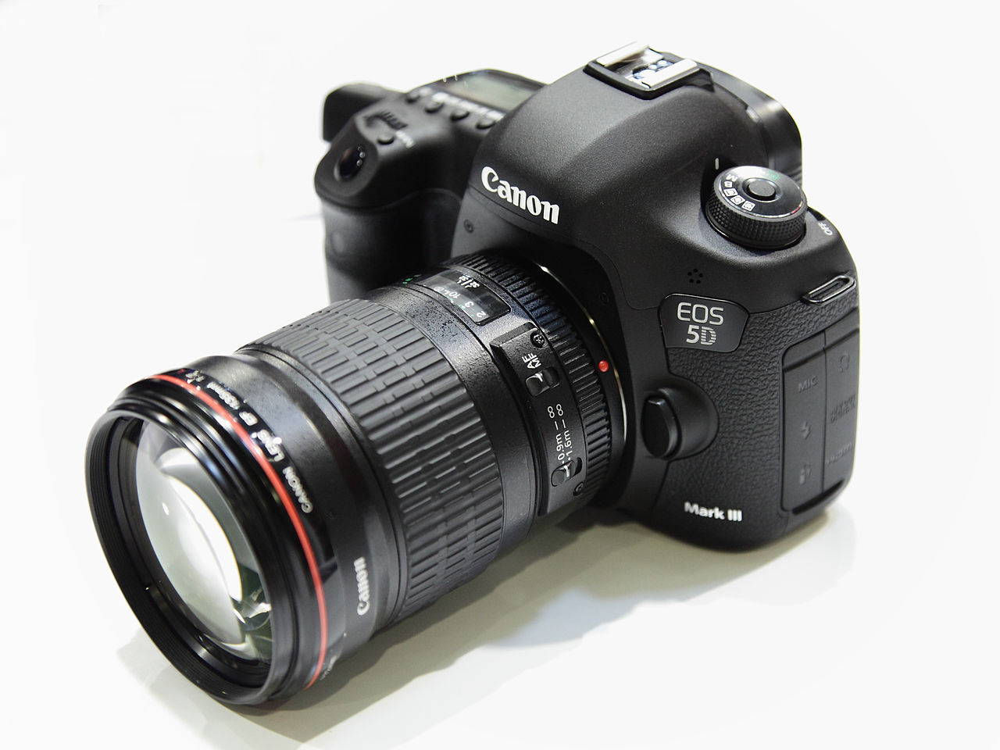

미놀타X-700
반자동 필름카메라
초심자에게 많이 추천되는 카메라이다.
조리개와 셔터 스피드를 자동으로 조절해주는 모드가 있어 slr 카메라 초심자에게 인기가 좋은 편
펜탁스 iq zoom 120
자동 필름카메라
눈에 보이는 그대로 찍히는 자동카메라이다.
플래시 내장으로 필요시 플래시 사용이 가능하다.
무선 리모컨도 달려있어 멀리서도 촬영이 가능하다.
캐논 5D Mark3
캐논 DSLR 풀프레임 카메라
오막삼이라는 별명으로 불리기도 한다.
출시된지 오래된 카메라이지만 현재에도 수준급 사진을 찍을 수 있는 기기이다.
나의 경우 주로 70-200mm 망원렌즈를 사용해 인물을 찍는 용도로 사용하고 있다.